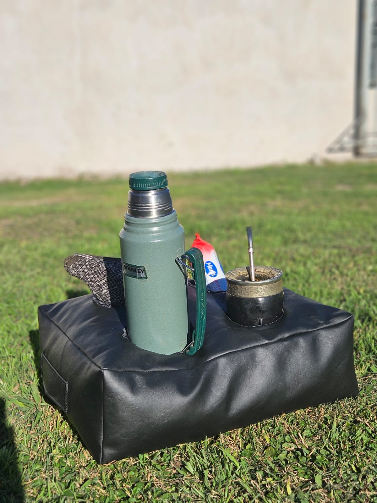

Almohadon matero
Son impermeables (algo que todos preguntan) • Rellenos con vellón siliconado para que no pierdan su forma. • Triple sector de apoyo.
Son impermeables (algo que todos preguntan) • Rellenos con vellón siliconado para que no pierdan su forma. • Triple sector de apoyo.

Ideal para remplazar tus latas de yerba y azúcar, super práctico para transportar en bolso y/o mochila. También se puede guardar un mate grande con su bombilla, es super amplio.
Mochilas Materas: Comodidad y Estilo